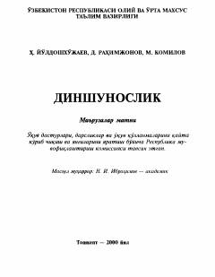

DDinning kelib chiqishi, tarixi va jamiyatdagi o'rnini o'rganishga bag'ishlangan o'quv qo'llanma.
Ushbu qo'llanma dinning kelib chiqishi, evolyutsiyasi, hozirgi zamondagi holati va uning jamiyat hayotidagi o'rnini ilmiy-falsafiy nuqtai nazardan yoritadi. Kitobda islom dinining O'zbekiston hududida tarqalishi, uning madaniyat va ma'naviyatni boyitishdagi hissasi hamda vijdon erkinligi masalalari tahlil qilingan. Asar oliy o'quv yurtlari talabalari va keng kitobxonlar ommasiga mo'ljallangan.